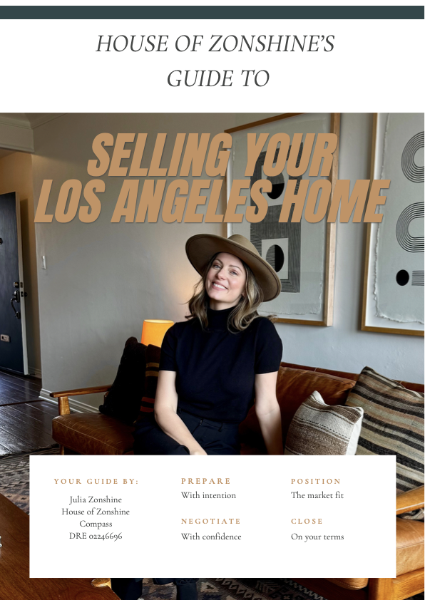
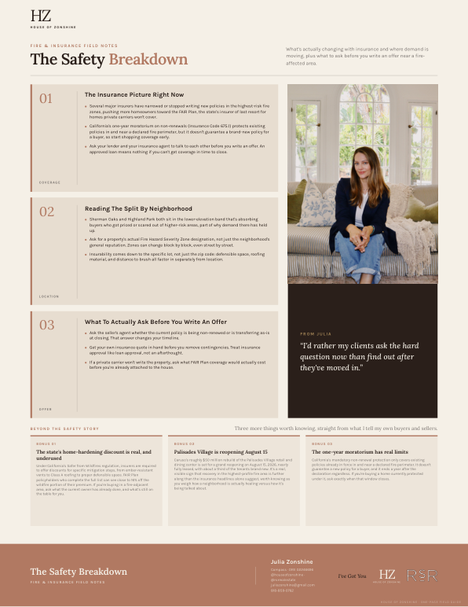
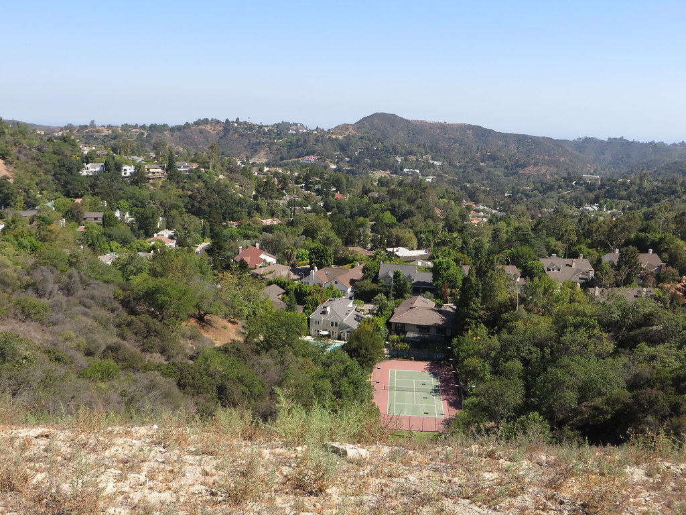

Selling · Complete guide
Selling Your Los Angeles Home
Preparation, pricing, marketing, negotiation, and closing—made clear.
The Guide Library
Clear, useful guidance for buying, selling, relocating, and getting to know Los Angeles—without the wall of words.
Buy or sell
Short field notes and full guides for the practical parts of a transaction.

Preparation, pricing, marketing, negotiation, and closing—made clear.

Get truly ready, read the market, write an offer that gets chosen, and close with a clear plan.

Know what should change your offer—and what should not scare you away.

The details beyond price that can make an offer easier to choose.

Read a block in the morning, afternoon, and at night before deciding it feels like home.

Home hardening, policy protections, and the questions to ask before buying.
Also in progressThe Lot Checklist
Relocating
Begin with the complete move, then use the local guides to narrow the map.

Choose your part of LA, plan the search, compare homes, and coordinate the move you’re leaving behind.
Local guides
The guides explain how a place lives. The Zonshine Edit shows the homes that make its case.
 Neighborhood guide
Neighborhood guide
Now available
Water, hills, Sunset Junction, architecture, and an honest read on a neighborhood that never sits still.
Explore Silver Lake ↗
Neighborhood guideNow available
My honest read on the neighborhood I call home—daily life, local favorites, housing, and the real tradeoffs.
Explore Sherman Oaks ↗Now available
Old Los Angeles, Griffith Park, walkable village blocks, hillside architecture, and the tradeoffs between them.
Explore Los Feliz ↗ Neighborhood guide
Neighborhood guide
Now available
Craftsman streets, the Arroyo, a real downtown, and a city whose architectural history still shapes daily life.
Explore Pasadena ↗